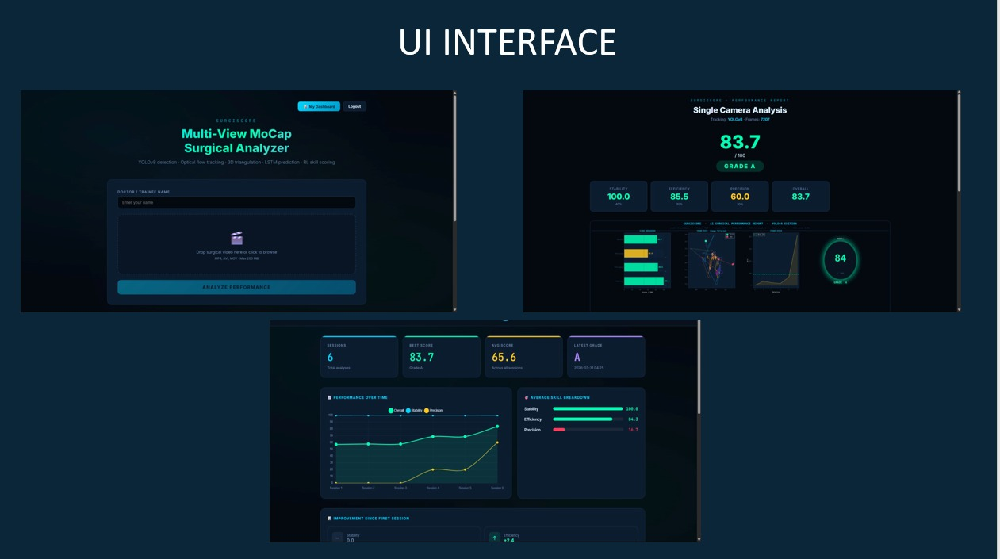
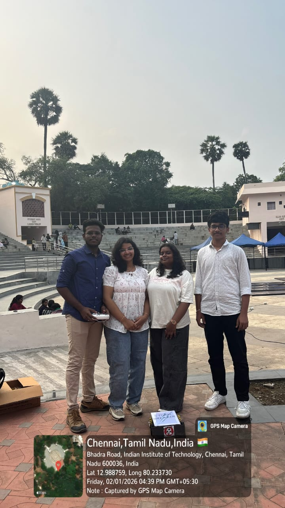

Real-time phishing detection with community trust scoring.
A Chrome extension with a Python and Flask backend that spots
phishing URLs using browser signals, trust scoring, and bot
defense. Signals and review data are stored in Supabase.
CybersecurityMLChrome ExtensionFlask
Live

SurgiScore
AI-powered arthroscopic surgical training evaluator.
An arthroscopic surgery evaluation system built by Aruneshwaran
using YOLOv8, MediaPipe, and temporal analysis for skill
assessment and training support.
A disaster-response architecture that combines IoT mesh nodes,
satellite support, drone swarms, edge AI, and public alert
delivery for zero-infrastructure zones.
IoTDisaster ResponseDrone SwarmSatellite
National Finalist
Smartathon 2.0
National finalist recognition for our phishing detection Chrome extension.
Selected as National Finalists at St. Joseph's College for a
phishing detection Chrome extension focused on real-time web
threat prevention.
Achievement card based on our Smartathon 2.0 national finalist journey.
National Finalist

RoboSoccer & Line Follower
National finalist RoboSoccer run with round-two Line Follower recognition at IIT Shaastra 2026.
At IIT Shaastra 2026, we became RoboSoccer national finalists
and reached Round 2 in Line Follower, showcasing robotics,
autonomous navigation, and control-system design.
RoboSoccerLine FollowerRoboticsIIT Shaastra 2026
Achievement card based on our IIT Shaastra 2026 technical event participation.